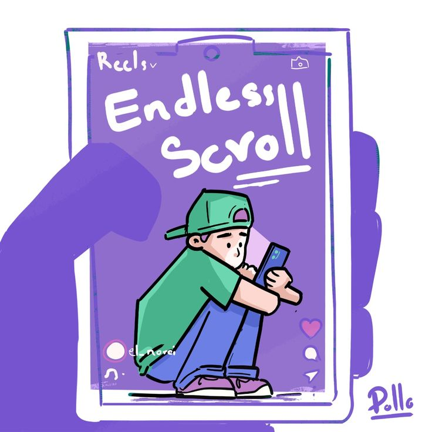
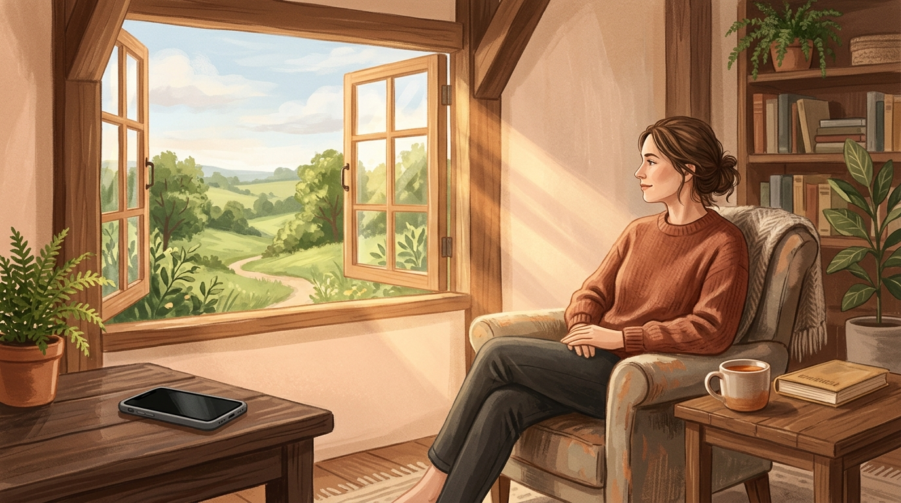

Are we actually living our lives, or just scrolling through them?
Imagine asking someone who lived 100 years ago to picture a world where people would spend hours every day watching hundreds of other people's lives on a tiny screen.
Imagine telling them that, over a lifetime, a person could potentially spend decades consuming content created by complete strangers.
Would they believe you? Would they understand why someone would willingly spend so much of their life watching other people live theirs?
Perhaps they would be shocked. Perhaps they wouldn't even understand the concept.
And yet, here we are.
Some people might say, "It's that damn phone again."
Well, perhaps. But I think the problem goes much deeper than a device.
Let me be straightforward here.
One of the biggest problems affecting students, working professionals, and honestly, almost everyone around us, is social media.
But I want to be more specific.
SCROLLING.
always one more post, one more reason to keep scrolling.We've all said it at some point.
"I can't stop scrolling."
"The reels are addictive."
"Just one more video."
But have we ever stopped to think about why we keep doing it?
Every time you finish watching a video, there's another one waiting for you. You don't have to search for it, ask for it, or even think about what you want to watch next. It simply appears.
And that's the interesting part.
There is no natural ending. No final episode. No last page. Just an endless stream of content waiting for your attention.
You open an application for five minutes, and suddenly an hour has disappeared.
And what do you have at the end of it?
Your eyes are tired, your mind feels occupied, and the task you originally intended to complete is still waiting for you.
The concerning part is that we often repeat this every single day.
And do we even enjoy it?
Surprisingly, some people do.
We know we have other things to accomplish, we know we've spent more time than intended, and yet we return to the same habit.
It's almost as if we've become comfortable with losing control of our own time.
Now, here's something I find particularly interesting.
We've become so accustomed to watching reels that we've started living our actual lives like them.
Let me explain.
You suddenly feel motivated to study.
That's your first motivational reel.
You get up, walk towards your desk, and open your book.
That's your second reel.
A few minutes later, you lose interest, start feeling lazy, and wonder whether you even want to study.
That's your sad reel.
Then you come across something inspiring, feel motivated again, and decide to give it another try.
Another motivational reel.
And the cycle continues.
We've practically turned our lives into an endless sequence of reels, switching between motivation, excitement, sadness, laziness, and distraction without allowing ourselves to stay consistent with anything.
Think about how strange that is.
We aren't just scrolling through reels anymore. We're beginning to experience our own lives in the same fragmented way.
Every new emotion becomes another transition. Every change in interest becomes another switch. We keep moving from one feeling to another, just like we move from one video to the next.
But real life doesn't work like that.
You cannot keep skipping the difficult parts, waiting for the next burst of motivation, and expecting everything to fall into place.
Sometimes, you have to study even when you're not motivated. You have to work even when the task feels boring. You have to stay with something long enough to actually make progress.
Life isn't a 30-second video where you can simply swipe away when things stop being interesting.
And perhaps that's something we've slowly forgotten.

Choosing presence over performance, sunlight over screen-light.Another one is the art of thinking clearly.
The biggest disadvantage of excessive scrolling might not even be the number of hours we lose. It could be the way we are training ourselves to spend our attention.
Think about the last time you sat down to read a book, study a chapter, or complete a task without checking your phone.
Did you feel the urge to switch to something else?
Did a few minutes of doing nothing make you uncomfortable?
We've become so accustomed to quick entertainment that activities requiring patience can start feeling unnecessarily difficult.
Reading feels slow. Studying feels exhausting. Even sitting quietly with our own thoughts can feel uncomfortable.
And this isn't just an observation without research behind it.
A 2025 research review published in Psychological Bulletin analysed 71 studies involving nearly 98,299 participants. It found that greater short-form video use was associated with poorer cognitive performance, particularly in attention and the ability to control impulses.
This doesn't mean that watching reels automatically damages your brain. However, it does give us a reason to think more carefully about how much time we spend consuming this kind of content.
Because there's a difference between receiving information and actually processing it.
We can watch hundreds of educational videos and still struggle to concentrate on one chapter. We can consume endless motivational content and still find it difficult to begin a task.
We are becoming better at consuming information, but are we giving ourselves enough time to understand it?
Think about that.
Something else I've noticed is how casually we have started accepting habits that we ourselves complain about.
We laugh at videos about procrastination while procrastinating.
We share memes about having no attention span while continuing to consume content that keeps interrupting our attention.
We relate to videos about wasting an entire day scrolling, and then proceed to do exactly that.
At what point did we start finding comfort in the very habits we want to escape?
Perhaps we've normalised distraction so much that being focused now feels unusual.
And that's a concerning thought.
We shouldn't have to find it extraordinary when someone can sit down and complete a task without checking their phone every few minutes.
Concentration should not feel like a rare talent.
It should be something we allow ourselves to practise.
I'm not here to tell you to throw away your phone, disappear from the internet, or stop using technology altogether.
Social media has its advantages. It connects people, provides information, creates opportunities, and gives everyone a platform to express themselves.
But there's a difference between using technology and allowing technology to control how you spend your time.
If you genuinely want to change your scrolling habits, here are a few things I'd suggest.
1. Take a break from the scrolling application.
Actually delete it for a while. Try taking a break for a month or two. Give yourself enough time to build a routine that doesn't revolve around constantly checking your feed.
2. Align yourself with your inner self.
Understand what you genuinely want to achieve. Identify your priorities instead of constantly comparing your life with what appears on someone else's screen.
3. Work in bits, not in bunches.
You don't have to transform your entire life overnight. Start with small tasks. Give yourself time to concentrate on one thing before moving to another.
4. Stop waiting for motivation.
Motivation is wonderful, but it doesn't always stay. Build the habit of showing up even when you don't feel particularly excited about what you're doing.
5. Appreciate the life you're actually living.
Practise gratitude. Read a book. Go outside. Have conversations. Explore your interests. Learn something new.
And most importantly, allow yourself to experience moments without feeling the need to record, upload, or share them.
Not every beautiful moment needs an audience.
Sometimes, it is enough that you experienced it.
There are places you haven't visited, people you haven't met, skills you haven't learnt, ideas you haven't explored, and versions of yourself you haven't discovered yet.
But how much of that are you actually experiencing when so much of your free time goes into watching other people experience their lives?
I think we need to ask ourselves a simple question.
Are we using our screens to explore the world, or are we using them to escape the world?
Because there's an entire life waiting outside that little screen.
And I genuinely believe it's far more beautiful than an endless feed could ever show us.
Don't spend so much time watching other people live that you forget to live your own.
Because at the end of the day, the most important thing you could ever scroll past is your own life.